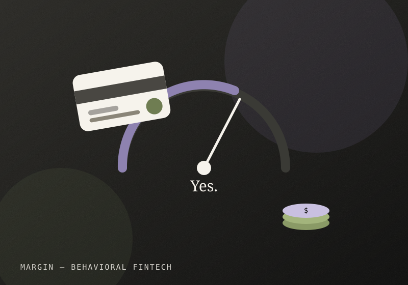

Why can't people tell if they can afford something?
Margin is an exploratory fintech concept about the moment right before a purchase — where most budgeting tools give you a static number, but not a real answer to "can I actually afford this right now."
"People need better calculators."
The obvious fix looked like a math problem: better calculators, clearer graphs, more granular budget categories.
It was never about the math.
The real barrier wasn't math — it was confidence. People weren't unable to calculate whether they could afford something; they didn't trust their own number enough to act on it. A budgeting app that hands over a bigger spreadsheet doesn't fix a confidence problem. It just adds more numbers to not trust.
Asked people to think out loud before a purchase.
Logged where hesitation actually showed up.
Mapped the doubt, not the transaction.
Confidence gap, not a data gap.
Tested showing reasoning, not just totals.
Answer the question being asked.
Designed a decision-first flow: instead of opening to a dashboard of totals, Margin opens on the specific question "can I buy this?" and answers it directly, in plain language, with the reasoning shown underneath rather than buried in a report you have to go find.

FIG. 03 — The "can I afford this" decision screen, with reasoning shown inline. (Placeholder — swap in real screens.)
Placeholder — concept-stage, no shipped metrics yet.
Once tested: change in decision confidence and time-to-decision compared with a standard budget dashboard.
Early versions used AI to generate a recommendation. It kept being right and still not trusted. The fix wasn't a smarter answer — it was showing the argument, not just the verdict. That's roughly when I stopped asking AI tools for answers and started asking them to argue with mine instead.